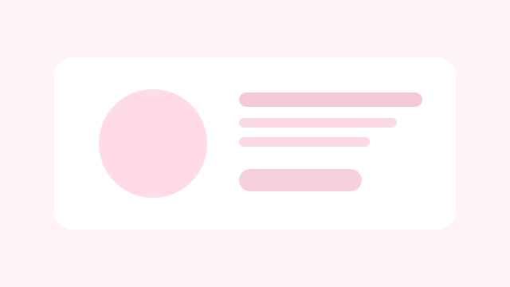
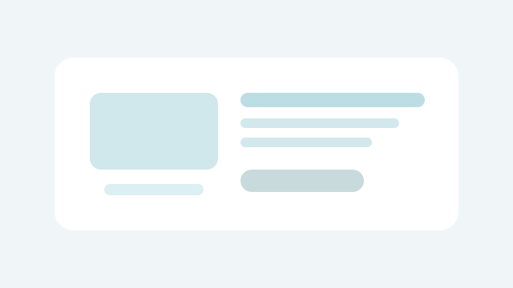

五金收纳
客户痛点：品牌表达不统一，询盘质量波动大。
我们做了什么：重构卖点叙事，升级落地页并搭配 TikTok 内容矩阵。
结果展示：3 个月有效询盘量提升约 42%。
Cases
我们关注真实业务问题与可验证结果，以下为典型服务场景。
客户痛点：品牌表达不统一，询盘质量波动大。
我们做了什么：重构卖点叙事，升级落地页并搭配 TikTok 内容矩阵。
结果展示：3 个月有效询盘量提升约 42%。

客户痛点：内容同质化严重，投放成本偏高。
我们做了什么：重建主题内容与达人组合，联动转化页测试。
结果展示：第 8 周起获客成本下降约 28%。

客户痛点：参数复杂，用户理解门槛高。
我们做了什么：建立场景化内容+技术拆解双线沟通框架。
结果展示：商机转化周期平均缩短约 21%。
客户痛点：海外反馈慢，季度爆款命中率不稳定。
我们做了什么：搭建选品洞察-内容预热-转化承接流程。
结果展示：新品首月动销率提升，自然流量占比增长。